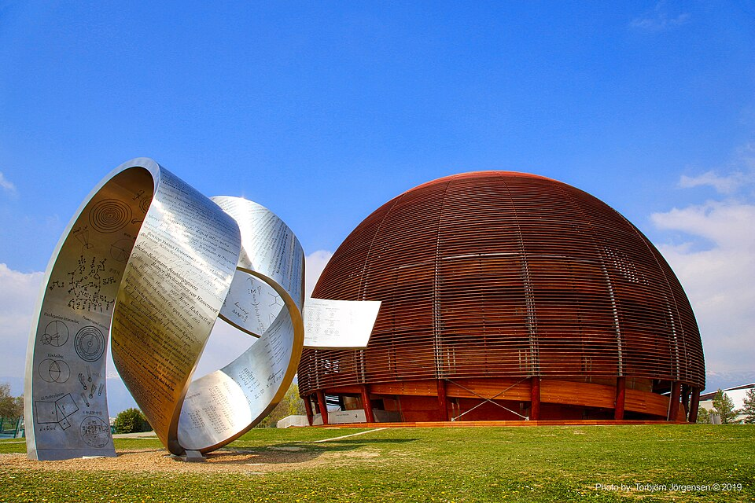

O Nascimento da Web (1989)
No final da década de 1980, Tim Berners-Lee trabalhava como engenheiro de software no CERN (Organização Europeia para a Pesquisa Nuclear), na Suíça. O laboratório reunia milhares de cientistas, mas enfrentava um grave problema de infraestrutura: a fragmentação de dados. Cada pesquisador usava um computador diferente, e não havia uma forma padronizada de acessar e cruzar os documentos armazenados em redes incompatíveis.
Em março de 1989, Tim escreveu um documento histórico chamado "Information Management: A Proposal". A ideia era criar um sistema de hipertexto distribuído, permitindo que links conectassem documentos em máquinas diferentes através da internet — que já existia, mas era restrita a e-mails e transferências complexas de arquivos.


A Construção do Código-Fonte e do Primeiro Servidor
Para provar que a teoria funcionava, Tim desenvolveu em 1990 as três tecnologias fundamentais que sustentam a navegação até hoje: o HTML (para formatar e estruturar as páginas), o URI/URL (para criar endereços únicos) e o HTTP (o protocolo de transferência de dados).
Ele programou toda essa estrutura utilizando um computador NeXT, que se tornou o primeiro servidor web do mundo (o famoso endereço info.cern.ch). Nessa mesma máquina, ele também criou o primeiro navegador, chamado simplesmente de WorldWideWeb.
A Decisão de Domínio Público (1993)
A parte mais importante da invenção não foi apenas o código, mas a visão de seu criador. Se a Web fosse patenteada e exigisse o pagamento de licenças, ela não teria se tornado uma rede global. Em abril de 1993, Tim Berners-Lee convenceu a diretoria do CERN a liberar o código-fonte da Web para o domínio público. Essa decisão de manter a tecnologia 100% gratuita foi o que permitiu a explosão no desenvolvimento de sites e sistemas que moldou o mundo moderno.